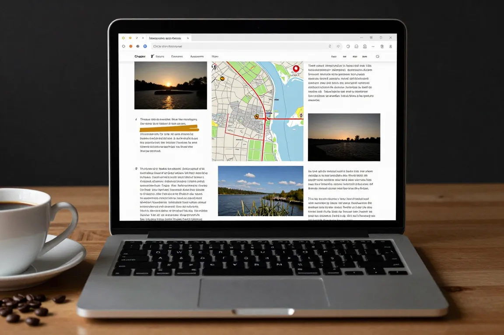

En stemme leser et resonnement over filmklipp, stillbilder, sitater og kart. Ren skrift, et jevnt rutenett, sakte zoom og en dempet gradering gir bildet roen til et trykt essay.

Kjerneidé
Behandle bildet som en side i et essay: ett påstand, ett bevis og et stille oppsett som lar argumentet lede.
Designprinsipper
Vis ett bevis i hvert opptak og hold det i 4s til 10s.
Sett klippet i en ramme på 80 % til 90 % av bredden med en svart marg på 24px.
Sett et sitat eller en tittel i en seriff på 36px til 48px, venstrejustert, i minst 4s.
Legg til en kildelinje på 14px i nedre venstre hjørne for hvert klipp: tittel, år og opphavsperson.
Bruk en sakte zoom på 3 % til 6 % over opptaket, som i Ken Burns-effekten.
Bruk en dempet gradering med kullgrå bunn (#14161A) og ett varmt aksent (#E0A458).
Legg nummererte kapittelkort på 2s mellom delene: et tall på 96px og en tittel på 36px.